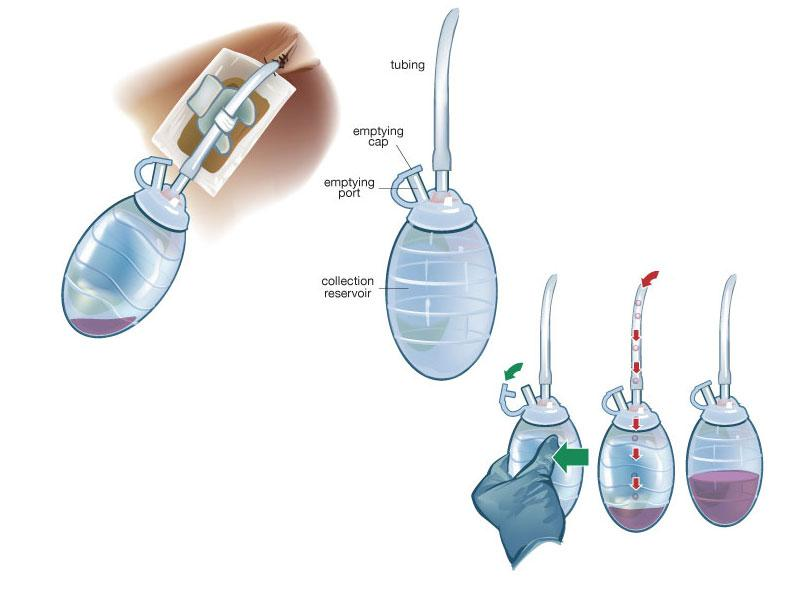
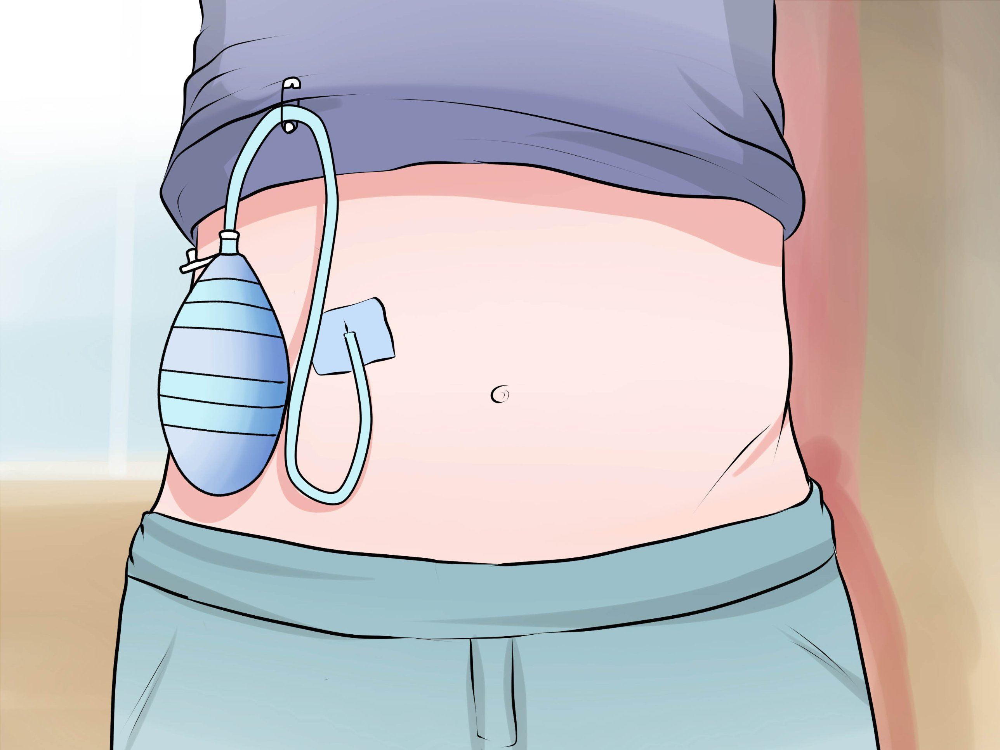
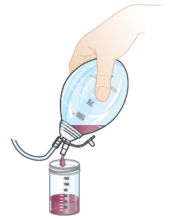
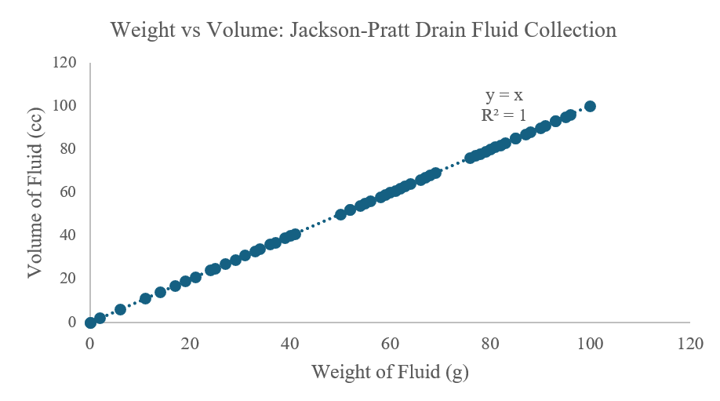
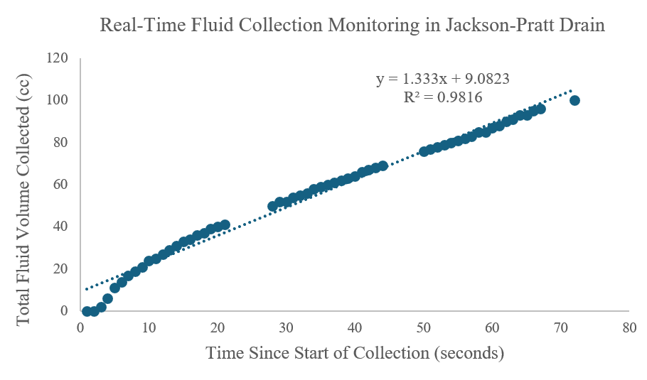
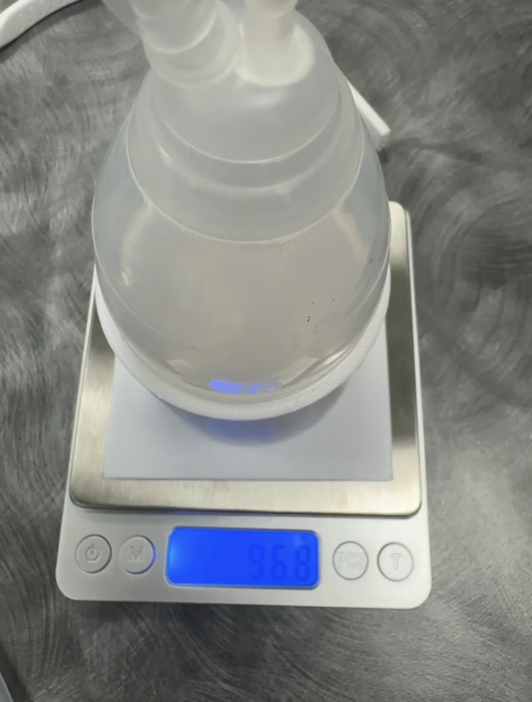
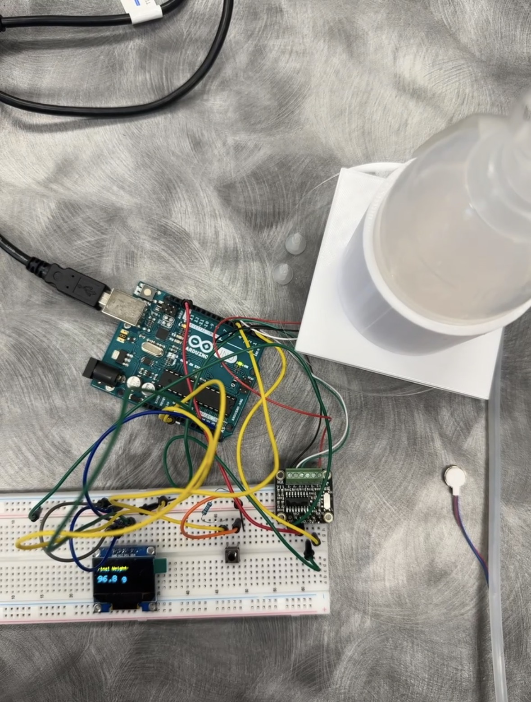
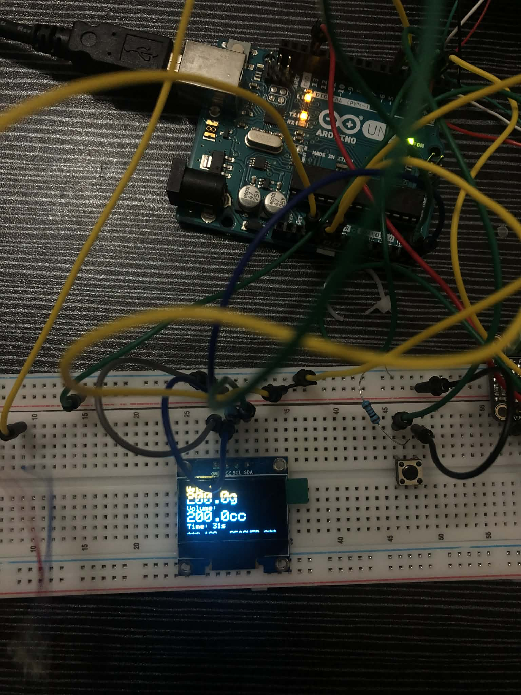
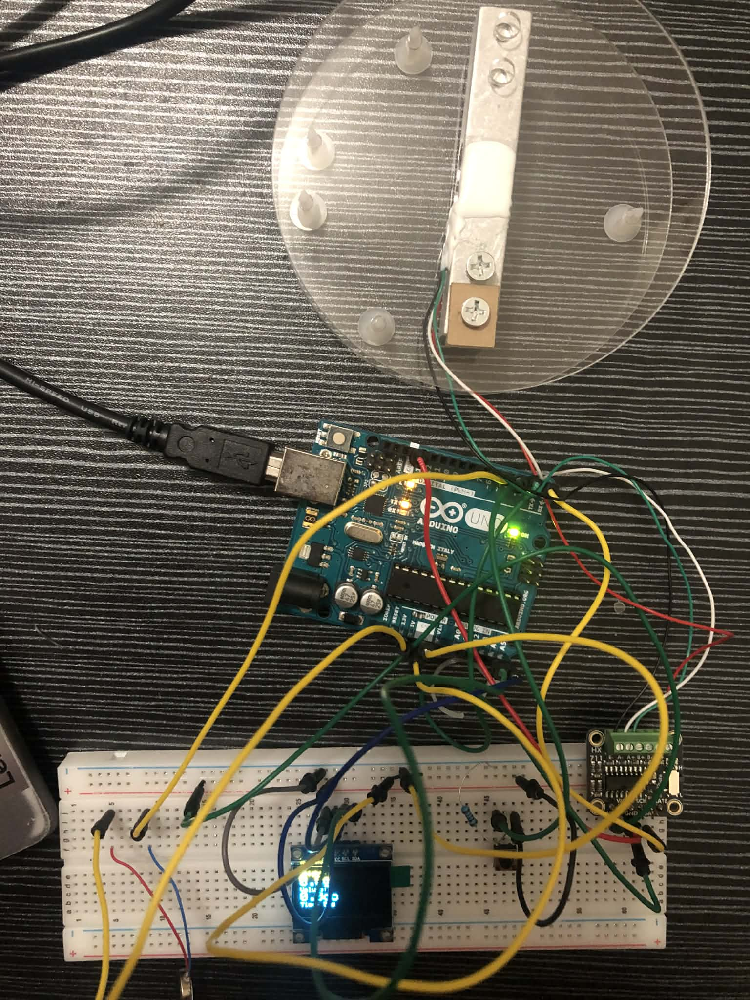
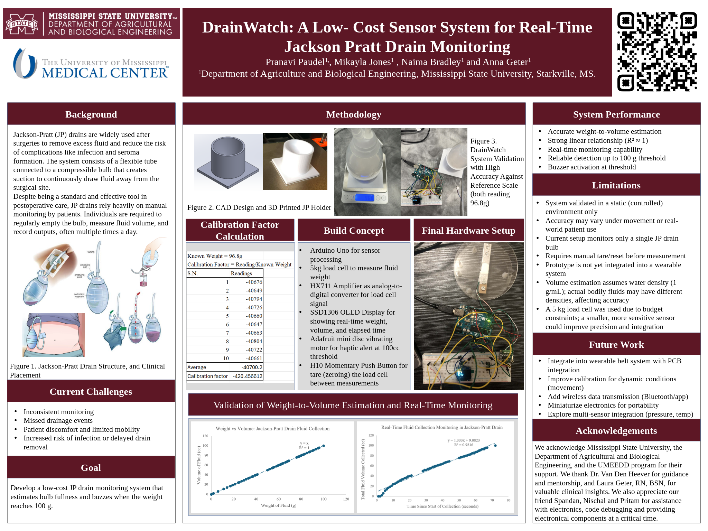

Project Overview
DrainWatch is an innovative wearable system designed to monitor the fluid output from Jackson-Pratt surgical drains in real-time. Using a 5kg load cell sensor integrated into a wearable belt, the system provides automated tracking of drain volume, sends alerts when the drain reaches 100cc, and eliminates the need for manual, error-prone monitoring by patients and healthcare providers.
Project Goal
Transform post-operative patient care by providing clinicians and patients with real-time, objective data on wound drainage, reducing infection risk and improving recovery outcomes.
Clinical Motivation
The Jackson-Pratt Drain Challenge
Jackson-Pratt drains are the gold standard for post-operative fluid management following surgeries like mastectomies, abdominoplasties, and liposuction. However, current clinical practice relies on patients to manually empty, measure, and record drain output multiple times daily—a process prone to error, inconsistency, and patient burden.
Clinical Impact
Accurate drain monitoring is critical for clinical decision-making. Drain removal timing is typically based on output thresholds (commonly 30-50cc per day), and delayed removal increases infection risk while premature removal compromises wound healing. Current manual methods make it difficult to track trends or detect anomalies in real time.
Jackson-Pratt Drain: Clinical Context
The Jackson-Pratt drain is the gold standard for post-operative fluid management. Understanding its design and clinical application motivated our project.



System Design & Sensor Selection
Design Methodology
DrainWatch employs a non contact sensing approach to maintain sterility and safety throughout clinical use. Rather than placing sensors within the drain system, the system measures fluid weight accumulated in the bulb using a precision load cell. The load cell is mounted beneath a molded holster that securely accommodates the drain bulb assembly.
Sensor Selection Rationale
A 5kg load cell was selected as the primary sensing element based on the following criteria:
- Provides clinically meaningful data (fluid volume estimation)
- Non-contact with bodily fluid - maintains sterility and safety
- Low cost and high reliability within the project budget
- Integrates seamlessly with the belt holster design
- Achievable within project timeline
- Supports key clinical decision: when to empty the drain
Potential Sensor Enhancements
Should additional funding become available following project completion, the following sensor enhancements may be explored:
- Pressure Sensor: Monitor suction loss to detect when drain stops functioning properly
- Temperature Sensor: Provide indirect infection indication through local temperature monitoring
These additional sensors would enhance the system's capabilities but require more complex integration and regulatory considerations.
Hardware Components & Wiring
Key Components
Arduino Uno
Microcontroller for sensor processing and OLED display control
Load Cell
5kg Digital Scale Load Cell
Mounted beneath the bulb holster to measure fluid weight as it accumulates
HX711 Amplifier
Analog-to-digital converter for load cell signal conditioning
SSD1306 OLED Display
128x64 pixel display showing real-time weight, volume, and elapsed time
Vibrating Motor
Adafruit Mini Disc Motor (Product 1201) for haptic alert at 100cc threshold
Momentary Push Button
H10 button for tare (zeroing) the load cell between measurements
Wiring Connections
- HX711 Load Cell Amplifier: DOUT → Pin 2, SCK → Pin 3, VCC → 5V, GND → GND
- SSD1306 OLED (I2C): SDA → A4, SCL → A5, VCC → 5V, GND → GND, Address 0x3C
- H10 Push Button (Tare): Pin 1 → Arduino Pin 4, Pin 2 → GND (uses INPUT_PULLUP)
- Vibrating Motor: Red wire → 3.3V, Blue wire → Pin 6 (Active Low)
Arduino Firmware
The firmware integrates all sensors and provides real-time monitoring with visual and haptic feedback.
#include "HX711.h"
#include <Wire.h>
#include <Adafruit_GFX.h>
#include <Adafruit_SSD1306.h>
// HX711 circuit wiring
const int LOADCELL_DOUT_PIN = 2;
const int LOADCELL_SCK_PIN = 3;
const int BUZZER_PIN = 6;
HX711 scale;
float reading;
float lastReading = 0;
#define CALIBRATION_FACTOR -420.457
// Threshold for 100cc alert
const float VOLUME_THRESHOLD_CC = 100;
const float WEIGHT_THRESHOLD_G = VOLUME_THRESHOLD_CC * 1.0;
// OLED display
#define SCREEN_WIDTH 128
#define SCREEN_HEIGHT 64
#define OLED_RESET -1
Adafruit_SSD1306 display(SCREEN_WIDTH, SCREEN_HEIGHT, &Wire, OLED_RESET);
// Tare button
#define BUTTON_PIN 4
int buttonState = 0;
int lastButtonState = 0;
unsigned long lastDebounceTime = 0;
unsigned long debounceDelay = 50;
unsigned long startTime = 0;
bool experimentRunning = false;
void displayWeight(float weight, float volume, unsigned long elapsedTime) {
display.clearDisplay();
display.setTextSize(1);
display.setTextColor(WHITE);
display.setCursor(0, 0);
display.println("Weight:");
display.setTextSize(2);
display.print(weight, 1);
display.print("g");
display.setTextSize(1);
display.setCursor(0, 25);
display.println("Volume:");
display.setTextSize(2);
display.print(volume, 1);
display.print("cc");
display.setTextSize(1);
display.setCursor(0, 50);
display.print("Time: ");
display.print(elapsedTime / 1000);
display.println("s");
if (weight > WEIGHT_THRESHOLD_G) {
display.setTextSize(1);
display.setCursor(0, 62);
display.println("*** 100cc REACHED ***");
}
display.display();
}
void setup() {
Serial.begin(57200);
pinMode(BUTTON_PIN, INPUT_PULLUP);
pinMode(BUZZER_PIN, OUTPUT);
digitalWrite(BUZZER_PIN, HIGH);
if (!display.begin(SSD1306_SWITCHCAPVCC, 0x3C)) {
Serial.println(F("SSD1306 allocation failed"));
for(;;);
}
delay(2000);
display.clearDisplay();
display.setTextColor(WHITE);
Serial.println("Initializing the scale");
scale.begin(LOADCELL_DOUT_PIN, LOADCELL_SCK_PIN);
scale.set_scale(CALIBRATION_FACTOR);
scale.tare();
display.clearDisplay();
display.setTextSize(1);
display.setCursor(10, 25);
display.println("Press button to start");
display.display();
Serial.println("Time(ms),Weight(g),Volume(cc)");
}
void loop() {
int reading = digitalRead(BUTTON_PIN);
if (reading != lastButtonState) {
lastDebounceTime = millis();
}
if ((millis() - lastDebounceTime) > debounceDelay) {
if (reading != buttonState) {
buttonState = reading;
if (buttonState == LOW) {
if (!experimentRunning) {
Serial.println("--- EXPERIMENT STARTED ---");
scale.tare();
startTime = millis();
experimentRunning = true;
digitalWrite(BUZZER_PIN, HIGH);
} else {
Serial.println("--- EXPERIMENT STOPPED ---");
experimentRunning = false;
digitalWrite(BUZZER_PIN, HIGH);
}
delay(500);
}
}
}
lastButtonState = reading;
if (scale.wait_ready_timeout(200)) {
reading = scale.get_units();
if (experimentRunning) {
unsigned long elapsedTime = millis() - startTime;
float volumeCC = reading * 1.0;
if (elapsedTime % 1000 < 200) {
Serial.print(elapsedTime);
Serial.print(",");
Serial.print(reading);
Serial.print(",");
Serial.println(volumeCC);
}
displayWeight(reading, volumeCC, elapsedTime);
if (reading > WEIGHT_THRESHOLD_G) {
digitalWrite(BUZZER_PIN, LOW);
} else {
digitalWrite(BUZZER_PIN, HIGH);
}
}
}
delay(200);
}Load Cell Calibration
Calibration Process
To accurately convert raw HX711 readings to weight values, we calibrated the 5kg load cell using a known reference weight. The calibration factor is determined by the ratio of load cell output to applied weight.
Calibration Data & Calculations
Calibration Factor Calculation:
The calibration factor of -420.457 was determined using the following method:
- Place a known weight (e.g., 100g) on the load cell
- Record the raw ADC reading from HX711
- Calculate: Calibration Factor = Raw Reading / Weight (grams)
- Used multiple reference weights to average and verify accuracy
Formula: Weight(g) = Raw ADC Count / Calibration Factor
Experimental Data & Analysis
Excel Data Analysis
Complete experimental data was collected and analyzed in Excel, including calibration verification, weight-to-volume conversion, and temporal analysis of fluid accumulation.
Complete Data Analysis: All raw data, calculations, and graphs are documented in the Excel workbook: Jackson_Pratt_Data.xlsx
Key Graphs Generated
Two primary analyses were performed on the experimental data:
Analysis Charts


Experimental Results
Experimental Protocol
A proof of concept test was conducted to validate system functionality. Water was introduced into the JP bulb mounted on the load cell to simulate post operative fluid accumulation. The system successfully tracked volume accumulation in real time and activated the alert mechanism at the predetermined threshold.
Performance Results
- Total Duration: 72 seconds to reach 100cc
- Average Flow Rate: ~1.4 cc/second (clinically realistic)
- Alert Accuracy: Buzzer triggered precisely at 100g/100cc threshold
- Display Responsiveness: Real-time updates every 200ms with 1-decimal precision
- Data Logging: Complete time-stamped CSV output for offline analysis
Hardware Assembly & Prototype
Below are photos documenting the development, assembly, and testing of the DrainWatch prototype.




Project Presentation Materials
Project Poster
The final project poster summarizes our research, design, and findings.

Video Explanation
A detailed video walkthrough of the DrainWatch project is currently in development.

Project Report
The complete technical report documenting the project's research, methodology, and outcomes is available for review.
DrainWatch Final Report
Comprehensive documentation including literature review, design methodology, concept evaluation, and final design specifications.
Ask For AccessSystem Limitations and Current Status
- Development Stage: The current implementation represents a laboratory prototype. Integration into a wearable form factor remains pending.
- Single Drain Capacity: Current configuration supports monitoring of one drain bulb. Many post operative patients require simultaneous management of multiple drains.
- Tare Control: Manual button activation is required for system zeroing. Automated taring at defined intervals could improve user experience.
- Data Management: Output is currently limited to serial communication. Onboard data logging capability for patient records would enhance clinical utility.
- Connectivity: System operates via wired connection. Wireless communication would improve patient mobility and comfort during recovery.
- Regulatory Status: Device is a prototype. Clinical implementation will require appropriate medical device classification and regulatory compliance.
Future Development Pathways
Near Term Development (Post Graduation with Additional Funding)
- Integrated Wearable System: Integration of components into functional wearable belt utilizing neoprene fabric and three dimensionally printed component housing
- Environmental Compensation: Temperature sensor integration to correct load cell output for ambient temperature variations
- Dual Drain Capability: System expansion to support simultaneous monitoring of multiple drainage bulbs, common in reconstructive surgical applications
- Local Data Storage: SD card integration for comprehensive time series data logging to support offline analysis and clinical record keeping
- Mobile Integration: Development of wireless communication interface for real time monitoring via mobile device applications
Long Term Vision (3 to 5 Years Post Graduation)
- Regulatory Clearance: FDA classification and approval pathway for clinical use as a Class II medical device
- Healthcare System Integration: HIPAA compliant data transmission protocols for integration with electronic health record systems
- Advanced Analytics: Machine learning based pattern recognition for detection of infection indicators or drain dysfunction
- Clinical Integration: Automated alert systems for direct notification to surgical teams through hospital communication networks
- Clinical Validation: Prospective clinical studies in collaboration with healthcare institutions specializing in breast cancer and reconstructive surgery
Project Team & Attribution
DrainWatch was developed as part of an engineering design project at Mississippi State University.
Team Members
- Pranavi Paudel
- Naima Bradley
- Mikayla Jones
- Anna Geter
Contact Information
For inquiries about this project, please contact Pranavi Paudel at pp892@msstate.edu
Acknowledgments
We acknowledge Mississippi State University, the Department of Agricultural and Biological Engineering, and the UMEEDD program for their support. We thank Dr. Van Den Heever for guidance and mentorship, and Laura Geter, RN, BSN, for valuable clinical insights. We also appreciate our friends Spandan, Nischal, and Pritam for assistance with electronics, code debugging, and providing electronic components at a critical time.
References
- Chen et al. (2016). Risk of infection is associated more with drain duration than daily drainage volume in prosthesis based breast reconstruction
- Gadiraju et al. (2025). Understanding the impacts of surgical drains on postoperative pain and quality of life